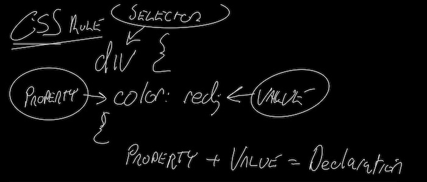
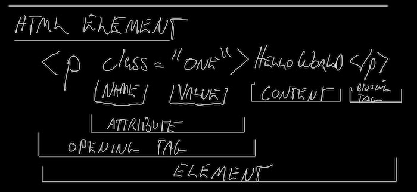

<!DOCTYPE html>
<html lang="en">
<head>
    <meta charset="UTF-8">
    <meta name="viewport" content="width=device-width, initial-scale=1.0">
    <link rel="stylesheet" href="styles.css">
    <title>Sandbox up till Flexbox</title>
</head>
</html>
	<body>
	<h1>Sandbox The Odin Project Up Till Flex Box</h1>

	<h2>Selectors:</h2>

	<p>There are 4 types of selectors:</p>
	<ul>
		<li>Universal Selector</li>
		<li>Element Selector AKA (Type Selector)</li>
		<li>Class Selector</li>
		<li>ID Selector</li>
	</ul>	
	
	

	<h3>Universal Selectors</h3>
	<p>Universal selectors are used to select all elements in a document. It is represented by the asterisk (*) symbol.</p>
	<p>For example, the following style rule will set the text color of all elements to red:</p>
	<pre>
		* {
			color: red;
		}
	</pre>
	
	<h3>Element Selectors (AKA Type Selectors)</h3>
	<p>Element selectors are used to select elements based on their element name. It is represented by the element name.</p>
	<p>Examples: "&ltp&gt, &ltdiv&gt, &lth1&gt, &ltbody&gt, &ltul&gt, &ltli&gt"</p> 
	<p>An example CSS-rule. The following style rule will set the text color of all h1 elements to red:</p>
	
	<pre>
		h1 {
			color: red;
		}
	</pre>
	
	<h3>Class Selectors</h3>
	<p>Class selectors are used to select elements based on their class attribute. It is represented by a period followed by the class name.</p>
	<p>Class selectors are defined in the HTML as an "Attribute" in the "Opening-tag" of and "Element". </p>

	<pre>
		&ltdiv class="myclass"&gtContent&lt/div&gt
		
		Attribute: class="myclass" which is made up of a name and a value.
		Opening-tag: &ltdiv class="myclass"&gt	
		Element: &ltdiv class="myclass"&gtContent&lt/div&gt
	</pre>

	

	<p>An example CSS-rule. The following style rule will set the text color of all elements with class="myclass" to red:</p>

	<pre>
		.myclass {
			color: red;
		}
	</pre>

	<p>ALSO: you can add multiple classes to an element. Two or more classes are seperated by a space. Because a a pace is used on multiple classes, one never wants to use sue spaces when creating class names.
	<pre>
		&ltdiv class="myclass myclass2"&gtContent&lt/div&gt
	</pre>
	</p>

<h3>ID Selectors</h3>
	<p>ID selectors are similar to class selectors. They select an element with the given ID, which is another attribute you place on an HTML element. The major difference between classes and IDs:
		<ul>
			<li>An element can only have one ID.</li>
			<li>It cannot be repeated</li>
			<li>Should not contain any whitespace</li>
		</ul>
	</p>An example CSS-rule. The following style rule will set the text color of the element with id="myid" to red:	
	<pre>
	#myid {
		color: red;
	}		
	</pre>

	<p>A HTML example:</p>
	<pre>
		&ltdiv id="myid"&gtContent&lt/div&gt	
	</pre>

	<h2>Selector Usage:</h2>

	<h3>Grouping Selectors</h3>
	<p>Grouping selectors are used to group several selectors so that the same style rules can be applied to all of them. It is represented by a comma (,). Grouping selectors saves repitition.</p>
	<p>For example, the following style rule will set the text color of all h1, h2, and h3 elements to red:</p>
	<pre>
		h1, h2, h3 {
			color: red;
		}	
	</pre>

	<h3>Chaining Selectors</h3>
	<p>Chaining selectors allows for greater precision when targeting an HTML element. The CSS-rule "chains" the selectors <strong>without space.</strong> One can chain:	</p>

		<ul>
			<li>Multiple class selectors</li>
				<pre>
					.myclass.myclass2 {
						color: red;
					}
				</pre>
			<li>Class selectors and an ID selector</li>
				<pre>
					.myclass.myclass2#myid {
						color: red;
					}
				</pre>
		</ul>

	<h3>Descendant Combinator</h3>
	<p><em>NOTE: There are four combinators total, however we are only dealing with the Descendant Combinator here</em>.</p>
	<p>The descendant combinator is used to select elements that are descendants of another element. It is represented by a <strong>space</strong>.</p>
	<p><em>NOTE on nesting: A way to think about nesting is one element inside the opening and closing tags of another element.</em></p>
	<p>For example, the following style rule will set the text color of all h1 elements that are descendants of div elements to red:</p>
	<pre>
		div h1 {
			color: red;
		}
	</pre>
	<p>The HTML would look as follows:</p>
	<pre>
		&ltdiv&gt
			&lth1&gtContent&lt/h1&gt
		&lt/div&gt
	</pre>

	<p><em>Though not covered at this point the other three combinators are:</em></p>
	<ul>
		<li>Child Combinator:</li>
		<p>The child combinator is represented by a greater-than symbol (>). It selects elements that are direct children of the first selector. It doesn't select elements that are nested further down the hierarchy.</p>
<pre>
	div > h1 {
		color: red;
	}	
	</pre>
		<li>Adjacent Sibling Combinator:</li>
		<p>The adjacent sibling combinator is represented by a plus symbol (+). It selects an element that is immediately preceded by another specific element, and they share the same parent.</p>
				<pre>
	div + h1 {
		color: red;
	}	
				</pre>
		<li>General Sibling Combinator:</li>
		<p>The general sibling combinator is represented by a tilde symbol (~). It selects elements that are siblings of the first selector and share the same parent, regardless of their position in the hierarchy.</p>
	<pre>
	div ~ h1 {
		color: red;
	}	
	</pre>
			</ul>	
	
	<h2>Basic CSS Properties</h2>

	<h3>Color and background-color</h3>
			<p>Below is an example of three different ways one can style color (hex, rgb, hsl) </p>
	<pre>
	p {
		/* hexadecimal; color red */
		color: #ff0000;
	}
	
	p {
		/* hexidecimal with transparency; color red 
		transparency is from 00 to ff*/
		color: #ff000080;
	}

	p {
		/* rgb (red, green, blue) red color */
		color: rgb(255, 0, 0);
	}

	p {
		/* rgba a=alpha which is opacity color red
		alpha parameter is a number between 0.0 (fully transparent) and 1.0 (fully opaque)*/
		color: rgb(255, 0, 0, 0.3);
	}
	
	p {
		/* hsl(hue, saturation, lightness)
		Hue is a degree on the color wheel (from 0 to 360) - 0 (or 360) is red,
		120 is green, 240 is blue. Saturation is a percentage value; 0% means a shade of gray 
		and 100% is the full color. Lightness is also a percentage; 0% is black, 100% is white. */
		
		color: hsl(15, 82%, 56%);
	}

	p {
		/* hsla(hue, saturation, lightness, alpha) The alpha parameter is a number between
		 0.0 (fully transparent) and 1.0 (fully opaque).*/
		
		 color: hsla(120, 100%, 50%, 0.3);

		</pre>

		<p style="background-color: hsl(15, 82%, 56%);">Background-color is similar to color: 
			<pre>	
		p {
			/* hsl example: */
			background-color: hsl(15, 82%, 56%);
		  }
		  	</pre>

			<h4>Resources: </h4>
			<ul>
				<li><a href="https://www.w3schools.com/cssref/css_colors.asp">W3 Schools CSS Colors</a></li>
			</ul>


	<h3>Typography basics and text-align</h3>
<p>Declarations (which is property: value;)</p>
<ul>
	<li>font-family: "Times New Roman", Times, serif;</li>
	<li>font-size: 16px; (px for pixels needs to be included)</li>
	<li>font-weight: bold;</li>
	<li>font-weight: 700; (1-1000. 700 is bold. Usually increments by 100 but font factors</li>	
	<li>text-align: center; (horizontal alignment)</li> 

</ul>

	<h3>Image height and width</h3>
	

	</body>
</html>